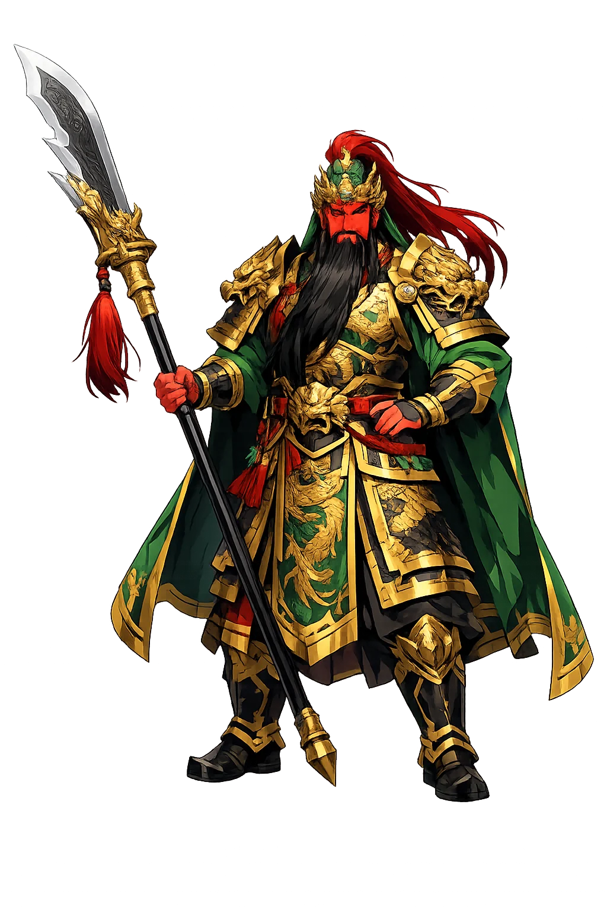
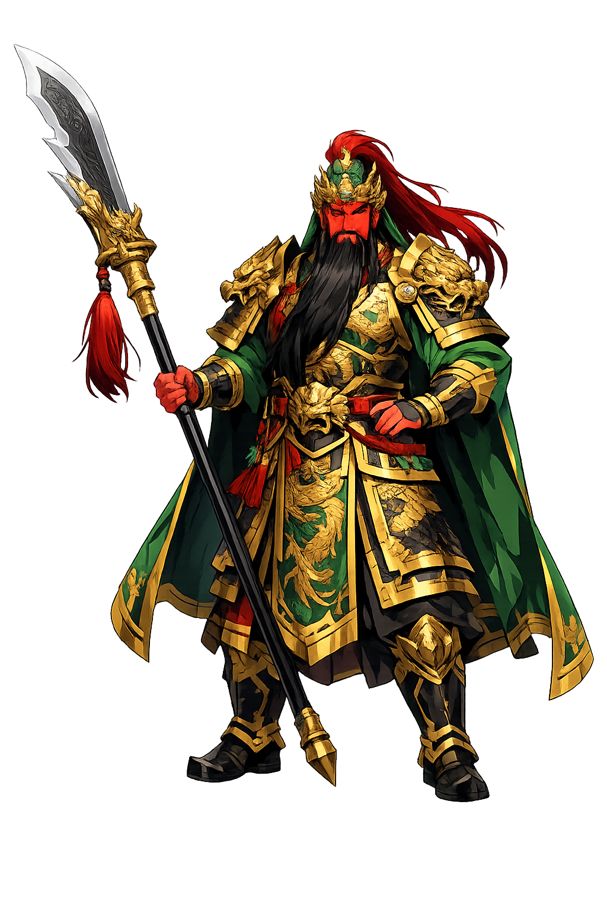

The Living Myth
War, Loyalty, Protection · "Emperor Guan" — the deified general Guān Yǔ, god of war, loyalty, and righteousness

Stories of Guāndì
Guāndì's myth is history sanctified: the Records of the Three Kingdoms gave him a life, the Romance gave him a legend, and eight dynasties gave him a godhood — loyalty tested by gold, exile, and death, then canonized rank by rank until the executed general stood beside Confucius. What is worshipped is the word that outlasts its usefulness.
The Romance of the Three Kingdoms (ch. 1) opens not with a battle but with an oath: in the blossom of Zhang Fei's peach garden, the three — Liu Bei the petitioner, Guan Yu the bearded giant, Zhang Fei the hot-tempered butcher — kneel before heaven and earth: "We ask not to be born on the same day, but we beg to die on the same day." The history behind the novel, the Sanguozhi (ch. 36), knows no oath; it records only that the three were close as brothers and shared everything. The oath is the Romance's invention, and it is one of the most consequential inventions in Chinese literature: for six centuries sworn brotherhood (結義) has been the template for loyalty between men who are not kin, quoted at initiations, in opera, film, and lodge ceremonies alike. The myth teaches that the deepest bonds are chosen, witnessed, and paid for in the same coin — a day of death, whenever it comes.
Captured with Liu Bei's household when Xiapi fell, Guan Yu dictated his own terms of surrender (Romance, ch. 25): he would yield only to the Han emperor, not to Cao Cao; the two sisters-in-law must be guarded with full propriety; and the moment his brother was found he would leave. Cao Cao tested the terms with gifts — gold, silks, ten beauties, and finally the Red Hare, the empire's finest horse. Guan Yu bowed twice for the horse alone: "once I hear where my brother is, I can reach him in a day." He repaid the courtesies in full — riding alone into a hundred thousand men to take the enemy general Yan Liang's head at Baima (ch. 26) — then hung his seal, left letters of thanks, and rode a thousand li through five passes and six of Cao's garrisons to rejoin a lord far poorer than his captor (ch. 27). Honor, the novel says, answers courtesy with interest — and keeps accounts with everyone.
The historical Guan Yu died badly in 219 CE — abandoned by allies, surrounded at Maicheng, captured at Linju and executed by Sun Quan's men (Sanguozhi, ch. 36). His head was sent to Cao Cao at Luoyang and buried with the honors of a prince — the grave at Guanlin that is still his shrine — while Wu buried the body at Dangyang in Hubei, where his cult first took root. Deification took eight centuries and is the slowest canonization in Chinese religious history. A Sui-era legend, preserved in Song Chan transmission records, converts his vengeful ghost at Mount Yuquan into a Buddhist protector; the Song court titled him Duke (1102) and later Prince; the Wanli emperor of the Ming raised him to Emperor — Guan Sheng Dijun — in 1614; and the Qing added the word Sage, pairing him with Confucius as the martial co-sage of the empire. No other Chinese figure rose from executed general to peer of Confucius. Rank upon rank, earned by the same oath.
Buddhism adopted its most unlikely guardian: the general who died over a broken oath became Sangharama, protector of the monastic precinct. In Chan halls his statue stands opposite Weituo's, the two flanking the Buddha's gate — the monk's army and the monk's police. The choice is theologically pointed. The religion of impermanence stations at its door the god of the promise that does not change, and communities that release men from family duty still require a witness against oath-breaking. His night patrol survives in legend: on the last night of the year he walks the world's courts, righting verdicts that living judges got wrong — a task the opera stage gave its fullest form, where Guan Yu's shade intervenes for the falsely condemned. Daoism claimed him too, as Xietian Dadi. But the deepest adoption is this: in Hong Kong, the police-station altar and the lodge shrine burn incense to the same red face, because both sides require a god whose displeasure is worse than the law.
War, Loyalty, Righteousness, and the Brotherhood of the Peach Garden
Guāndì is China's god of the kept oath: the historical general Guān Yǔ (d. 220 CE) whose loyalty outlasted his dynasty, deified by emperors, merchants, and underworld alike until his red-faced statue stood in more temples than any other figure in the Chinese world — the one witness before whom both police and triads refuse to lie.
Qīnglóng Yǎnyuèdāo — the Green Dragon Crescent Blade, his legendary weapon and temple attribute.
The brotherhood sworn with Liú Bèi and Zhāng Fēi — China's founding myth of loyalty.
His temple image: crimson countenance of righteous wrath, green robe, long beard.
Merchants worship him as the enforcer of contracts — loyalty monetized into trust.
From the original script to the living URL
關帝
The name in its original Chinese form. Guāndì (關帝) is attested in the source tradition — “"Emperor Guan" — the deified general Guān Yǔ, god of war, loyalty, and righteousness”. Its macron-length vowels carry the full phonetic and orthographic weight of the source tradition.
guandi
Reduced to plain guandi, the name loses everything that made it specific: macron-length vowels. What remains is an ASCII string that machines can parse but that no longer speaks with its original voice.
Guāndì
The Unicode restoration recovers what ASCII flattened. Guāndì restores macron-length vowels, returning the name to its original written dignity. The domain encodes to Punycode, but the browser displays the truth.
Guāndì.com → xn--gund-tpa7j.com
The non-ASCII characters in Guāndì are encoded while the ASCII remains visible. To the DNS, it is Punycode. To humanity, it is Guāndì.
Owned, ideal, and ASCII forms of Guāndì
Guāndì
Restores 關帝. The live temple domain — guāndì.com.
guandi
Flattens 關帝. The plain ASCII fallback — what DNS and legacy systems see.
How Guāndì was spoken
How Guāndì is preserved in writing
A bespoke provenance study for Guāndì is being prepared by the PUNICODEX scholarly team.
Contribute scholarly provenance →Guāndì is the god of the thing that outlasts its usefulness. Empires fell, dynasties renamed him, merchants and monks and policemen each rewrote him — and the oath stayed. He asks the oldest question of any alliance, company, or friendship: when the peach garden is gone and the gold is on the table, what is left of the word you gave?
Enter Extended Lore